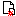

In MeshCMS a page is a file. Period. Having said that, there are three ways to add a new page:
open the File Manager and create a new HTML file in the desired place. Please keep in mind how the site map is created;
(much easier) go to the Control Panel, then choose Page Manager. Choose the  icon associated to the right page: you will add a child page to that one. A small popup will open. Insert a title for the page (use a short one since it wiil be used to create a name for the file: you will be able to change it while editing the page). Uncheck Create enclosing directory only if you are absolutely sure that you won't add a child page to the new one in future. Then click on Create and the editor will be opened;
(the easiest way) navigate to a page and click on New page or on New child page. You will add a new page at the same level of the current one or a child page respectively. Then continue as above (insert the title and so on).
Additionally, you can add (and edit) pages from outside MeshCMS, for example using an FTP client. After doing that, make sure you run Refresh Site Map in the Control Panel so MeshCMS can find your new page(s). The site map is automatically refreshed after some hours, so new pages will be found even if you don't start the update manually.